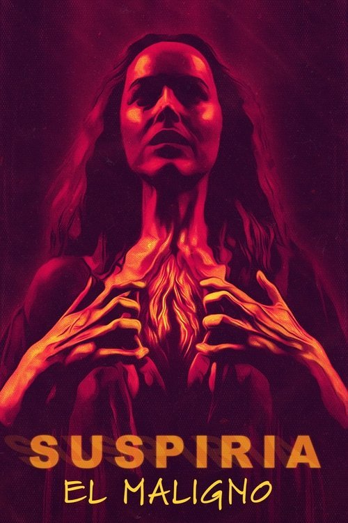

Suspiria (2018)
Sinopsis Rápida
Una joven bailarina americana llega a una prestigiosa academia de danza en Alemania, solo para descubrir que está envuelta en un misterio aterrador y sobrenatural.
Sinopsis Detallada
En esta remake del clásico de culto de Dario Argento, Susie Bannion se une a la Markos Tanz Company, una escuela de ballet con una oscura historia. A medida que se adentra en el mundo del baile, Susie comienza a experimentar extraños sucesos y horrores inexplicables. La atmósfera opresiva y la creciente sensación de maldad latente generan una tensión escalofriante. Luca Guadagnino teje una trama compleja con giros inesperados, explorando temas como el poder, el control, y la naturaleza del mal. La película es un viaje perturbador a través del horror psicológico y una experiencia visualmente impactante.
¿Por qué tenés que verla?
- Una experiencia cinematográfica visualmente impactante e inolvidable.
- La banda sonora de Thom Yorke crea una atmósfera inquietante y magistral.
- Reinterpretación moderna de un clásico de culto, con un impacto significativo en el género de terror.
- Profunda exploración de temas de poder, feminidad y misterio.
Idea Extra
Análisis comparativo entre la versión de 1977 y la de 2018: un estudio de las diferencias estilísticas y temáticas.
{{CONTENIDO_RELACIONADO}}